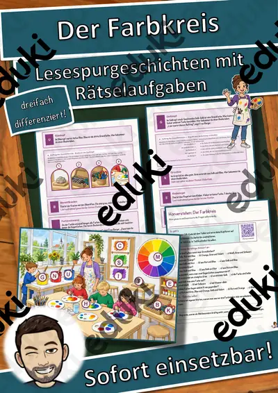
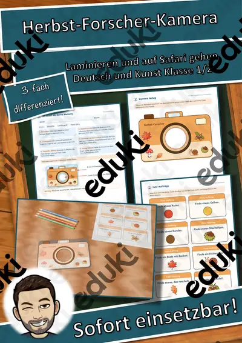
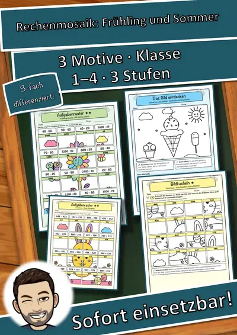

Kunst Jahreszeitenbaum Farbkreis
Kunst Jahreszeitenbaum Farbkreis
Jahreszeitenbaum (Farben mischen)Arbeitsblatt zur Farblehre und zum Mischen von Farben. Die Schüler unterscheiden zwischen warmen und kalten Farben. Diese werden anschließend aus den Primärfarben gemischt, und auf dem entsprechnden Farbrezepten festgehalten (stärkeres Papier verwenden). Anschließend entscheiden sich die Schüler für eine Baumvorlage oder erstellen selbst eine Vorlage eines Baumes. Der Baum wird in vier Bereiche aufgeteilt und anschließend in den entsprechenden Farben für Frühling, Sommer, Herbst und Winter gemalt.
Jahreszeitenbaum (Farben mischen), Farbkreis, Warme Farben, Kalte Farben, Farbkreis, Farbkreis, Farbkreis nach Itten, Itten, Johannes Itten, Farbkreis, Farben mischen, Wasserfarbe, Wasserfarben, Mischfarben, Primärfarbe, Sekundärfarbe, Tertiärfarbe, Komplimentärkontrast, Konstrast, Kontraste, Farben, Farbrezept, Farbrezepte, Gelb, Violett, Grün, Ron, Cyanblau, Kunst unterrichten, warme Farben, kalte Farben, Acrylfarben, Regenbogen, Geburtstag, Jahreszeitenbaum Farbkreis, (Farben mischen), Farbkreis, Warme Farben, Kalte Farben, Farbkreis, Farbkreis, Farbkreis
Ähnliche Materialien

Lesespur: Der Farbkreis – Lesespurgeschichte mit Rätseln (Klasse 5)

Farbkreis, Farbenlehre (auch Homeschooling)

Das Papier – Vom Baum zum Papier – Lesespurgeschichte mit Rätselaufgaben (Klasse 5)

Warme und kalte Farben – Lesespurgeschichte mit Rätselaufgaben (Klasse 3)

Herbst-Forscher-Kamera – Papier-Kamera zum Laminieren mit Foto-Aufträgen und Fotoalbum, 3-fach differenziert (Klasse 1/2)

Rechenmosaik Paket Frühling und Sommer: 3 Motive, lösen – kleben – ausmalen (Klasse 1–4)

Papier-Schneeflocken falten und schneiden – Winter-Bastelvorlage mit Sachtext, 3-fach differenziert (Klasse 2/3)